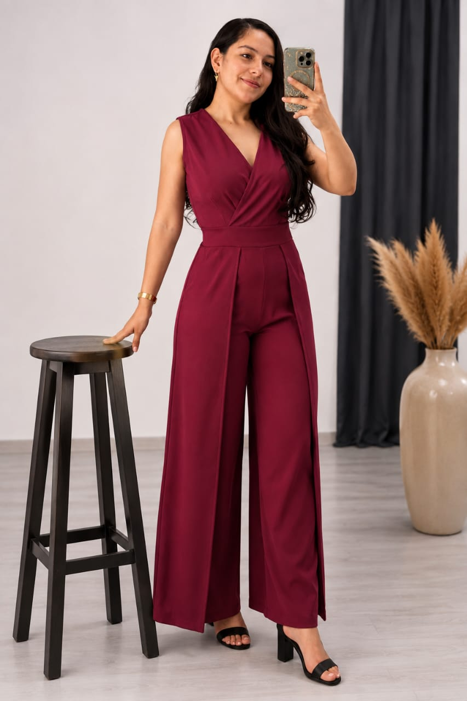
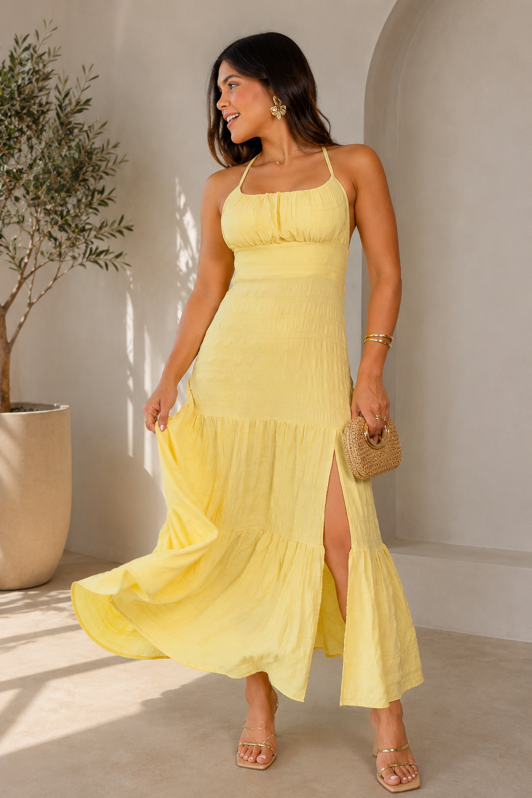
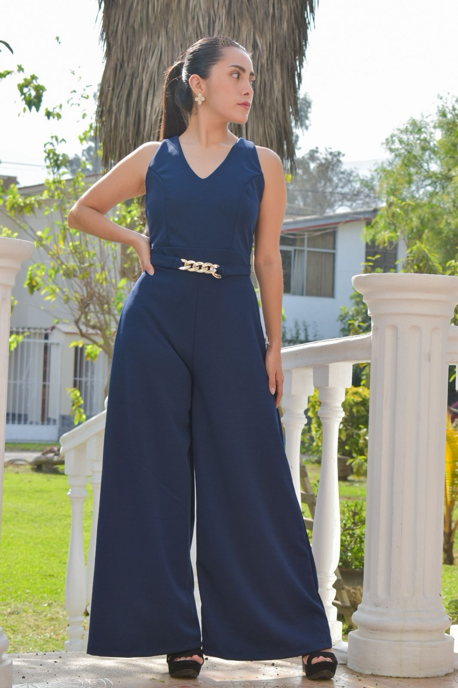
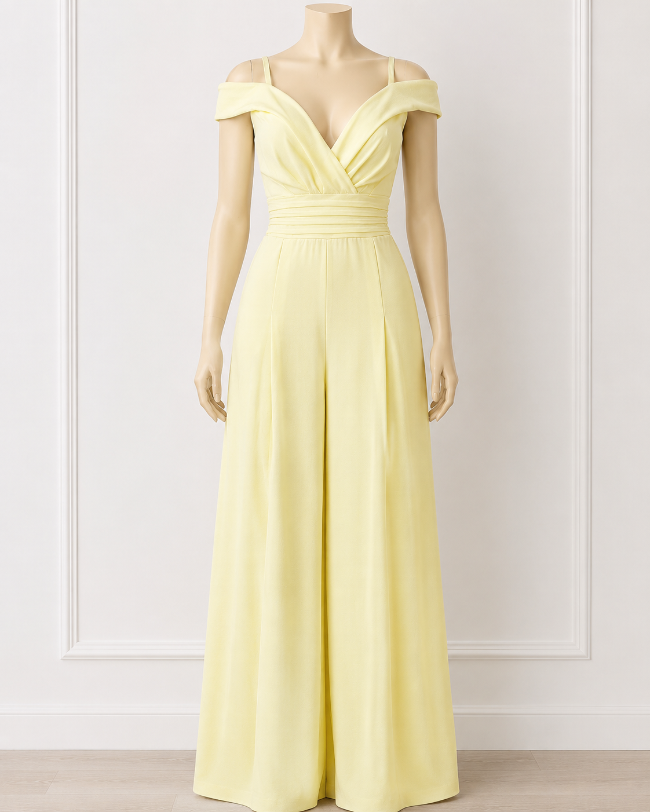

Ver la prendaYismi
Enterizo largo

Boutique femenina · Piura, Perú
Una selección pequeña y especial para sentirte tú. Conoce cada detalle y recibe atención cercana antes de elegir.
Envíos a todo el Perú · Atención personalizada
Atención realTe ayudamos a elegir tu talla
Envíos a todo PerúCoordinación directa y cercana
Tienda en PiuraVen a ver y probarte tu prenda
Selección actual · 03 piezas
Tres piezas, elegidas con calma. Entra a cada prenda para ver colores, tallas y disponibilidad.

Ver la prendaEnterizo largo

Ver la prendaEnterizo largo

Ver la prendaEnterizo largo
La esencia Narantha
“La ropa no es solo tela.
Es la forma en que una mujer
se presenta al mundo.”
Narantha nació en Piura de una historia familiar y de las ganas de seguir. Elegimos pocas piezas, con atención a cómo se sienten, cómo acompañan y cómo hacen especial lo cotidiano.
Conversa directamente con nosotras si tienes dudas de talla o fit.
Coordinamos contigo el destino y el tiempo de entrega por WhatsApp.
Pocas prendas, elegidas una por una. Sin ruido, solo piezas con intención.
También en Piura